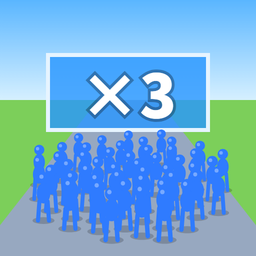
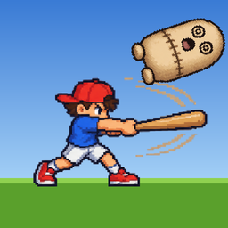
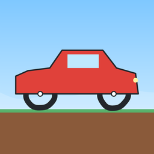
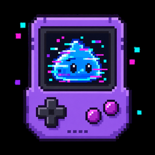

ふやせ！ゲートラン
だれでもランナー1プレイ 30秒
広告でよく見る「×3 や +20 のゲートで仲間を増やして走る」ゲームを、本当に遊べる版で。ゴールまでつれていった人数で友達と勝負します。
- 指を左右に動かして、どちらのゲートを通るか選ぶ
- 赤い群れ・ノコギリ・かべで仲間が減る。しきりの中は反対側へ行けない
- 記録をシェアすると、友達がその人数に挑戦できる
個人で作っているブラウザゲームです。スマホで開くだけで遊べます。インストールは不要です。

広告でよく見る「×3 や +20 のゲートで仲間を増やして走る」ゲームを、本当に遊べる版で。ゴールまでつれていった人数で友達と勝負します。

10秒でダミー人形をなぐってダメージを溜め、最後にバットでかっとばす。飛んだ距離で友達と勝負します。

タイヤを指で描いて、障害物コースを走らせるレース。ゴールまでのタイムで友達と勝負します。

拾った古いゲーム機「GLITCH BOY」の中は、バグだらけのレトロRPG。タップと放置で進めながら、裏技を探します。
4歳の子どものための、タッチで遊ぶミニゲーム集。かず・ことば・めいろ・おえかきなど 56 種類あります。